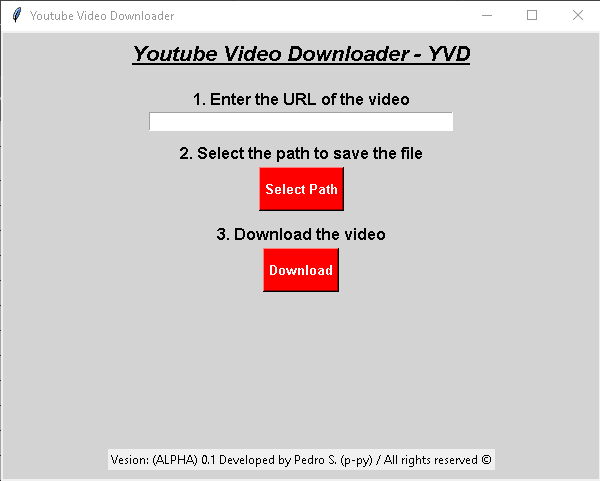
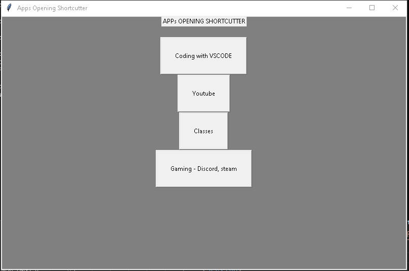
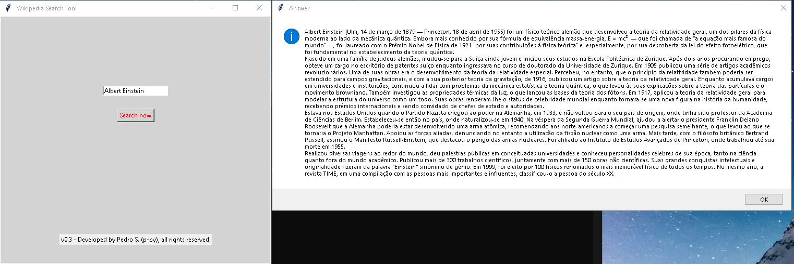
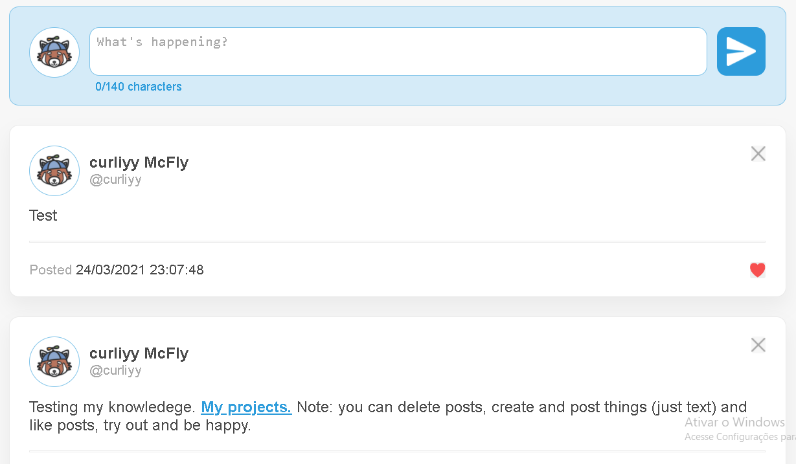
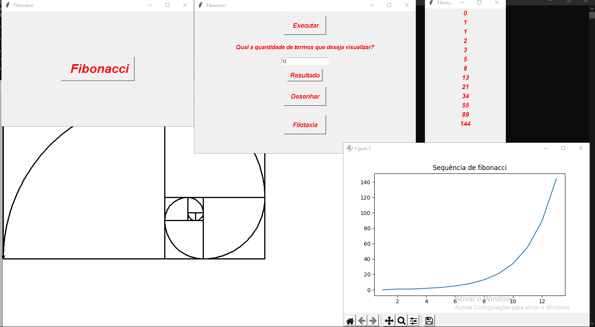
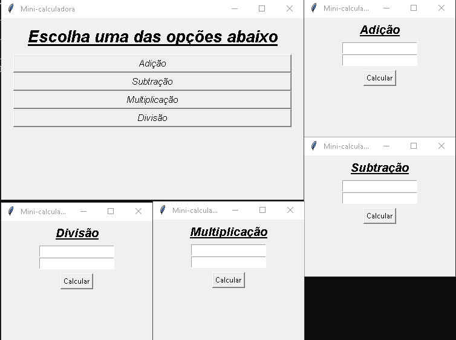

Projeto 1 - "Youtube Video Downloader".
Fazer download de vídeos do youtube de forma segura sempre foi uma tarefa complicada, a missão do Youtube Video Donwloader é justamente facilitar essa atividade. Com ele tudo que você precisa é do link do vídeo e basta clicar o botão de Download! Esse projeto promete um grande futuro, porém ainda está em fase de desenvolvimento.
Projeto 2 - "App Manager".
Com esse pequeno projeto é possível encurtar a tediosa de abrir diversos aplicativos todos os dias para realizar uma determinada atividade. Você pode determinar um conjunto de aplicativos e qual o nome desse grupo, que pode ser a tarefa que vai ser realizada ou outro nome de sua preferência. E com o clique de apenas um botão o script roda todos os outros. Vale avisar que ele ainda se encontra em fase de desenvolvimento.
Projeto 3 - "Wikipedia Search Tool".
Script feito todo em python usando uma biblioteca de integração com a Wikipedia, o usuário dá entrada em uma determinada palavra, o script procura na base de dados de páginas da Wikipedia e devolve um resumo. Muito útil para alunos e até professores.
Projeto 4 - Cópia básica do Twitter.
O objetivo desse projeto foi apenas testar as minhas capacidades e habilidades pessoais em HTML, CSS e o básico de Java Script. Ele é una cópia básica e identica das funcionalidades principais do twitter, claro que sem a parte de ser uma rede social em si, mas rodando o código você poderá publicar postagens, excluir postagens e até curti-las!
Projeto 5 - Demonstrativa da sequência de fibonacci.
Esse script em python foi feito para um trabalho escolar sobre a sequência de fibonacci, a proporção áurea e o retângulo dourado, o objetivo base dele é demonstrar as propriedades de tal sequências e seus derivados. Ele foi feito utilizando famosas bibliotecas de python, entre elas matplotlib, para demonstração de gráficos, pygame e tkinter para a parte visual.
Projeto 6 - Uma calculadora básica
Uma calculadora básica feita com python e sua biblioteca gráfica tkinter.
